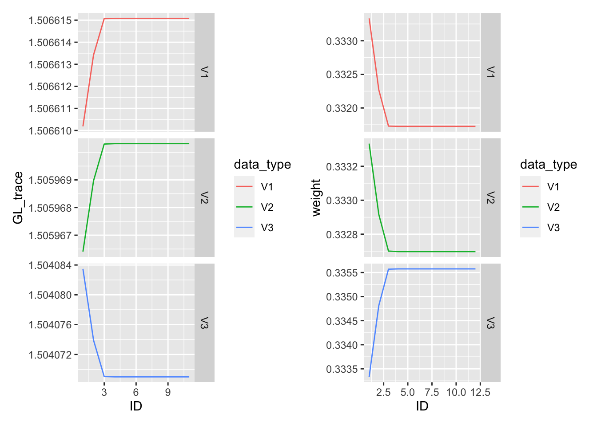
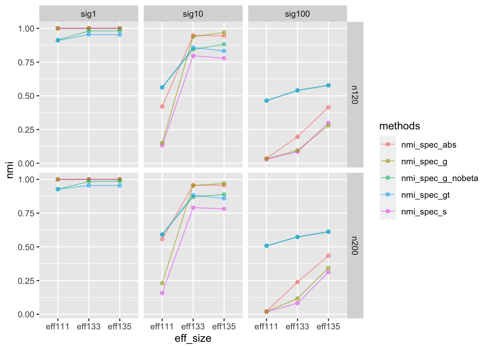
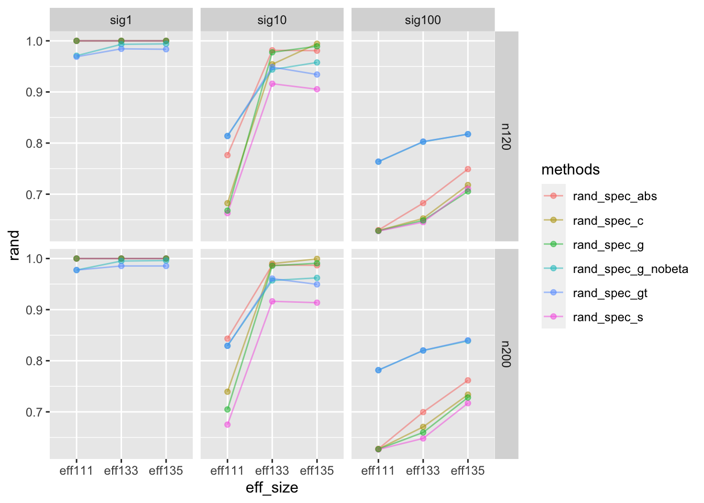
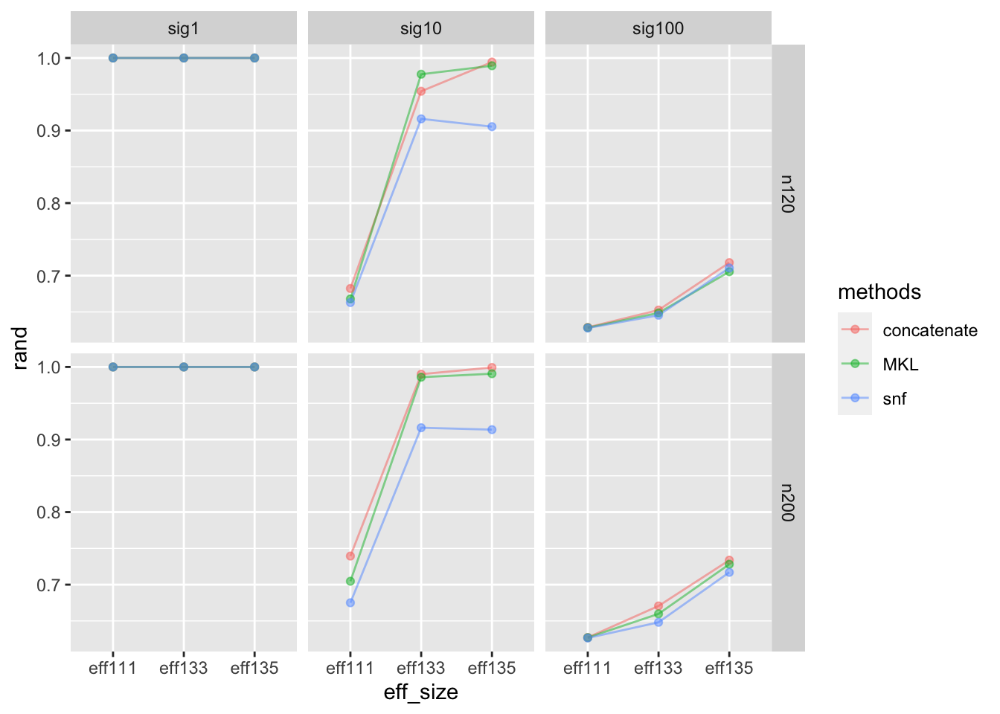
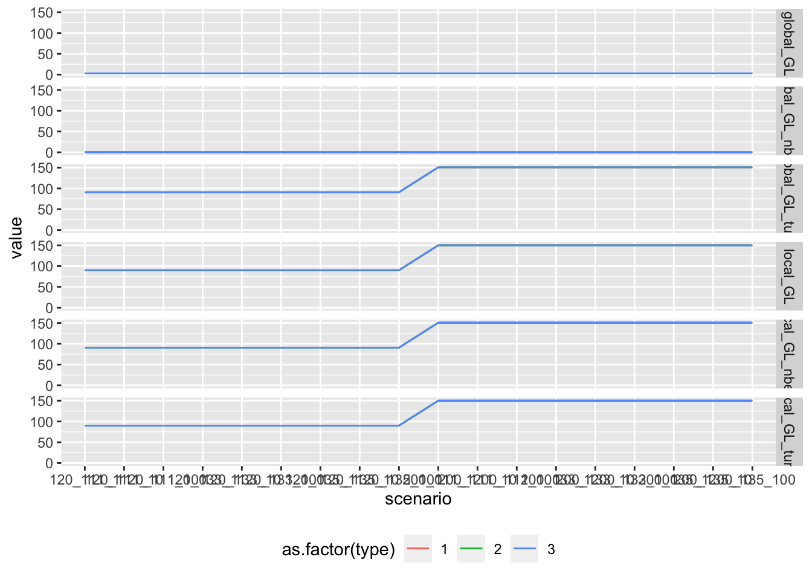
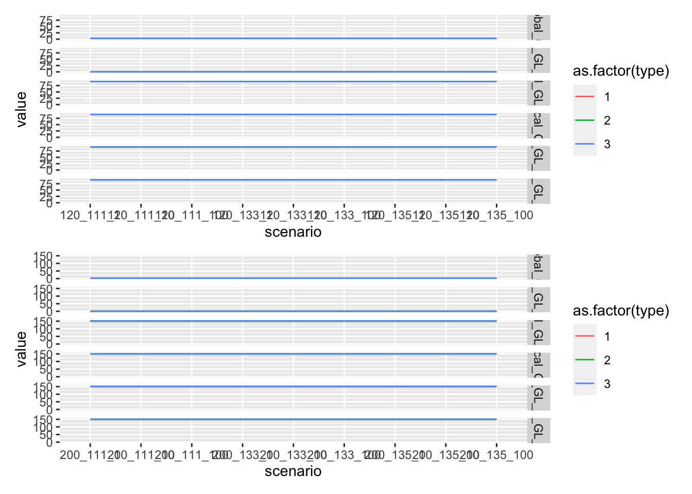
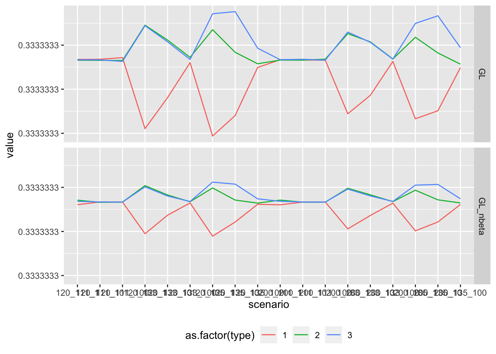
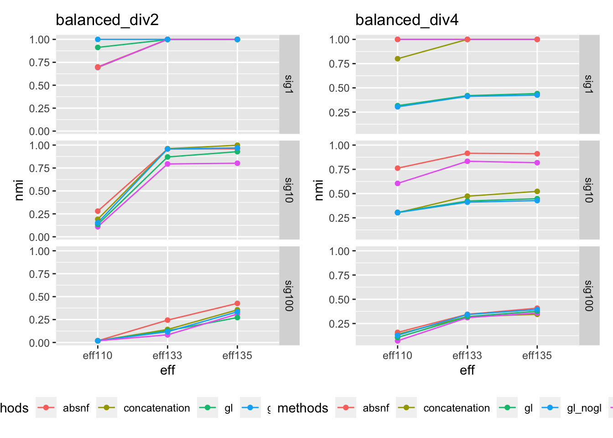
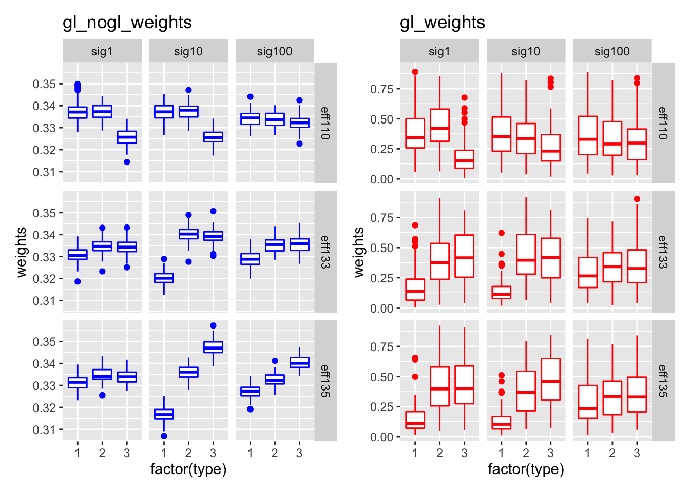

Last updated: 2020-12-29
Checks: 7 0
Knit directory: multiomics-SIMLR/
This reproducible R Markdown analysis was created with workflowr (version 1.6.2). The Checks tab describes the reproducibility checks that were applied when the results were created. The Past versions tab lists the development history.
Great! Since the R Markdown file has been committed to the Git repository, you know the exact version of the code that produced these results.
Great job! The global environment was empty. Objects defined in the global environment can affect the analysis in your R Markdown file in unknown ways. For reproduciblity it’s best to always run the code in an empty environment.
The command set.seed(20200830) was run prior to running the code in the R Markdown file. Setting a seed ensures that any results that rely on randomness, e.g. subsampling or permutations, are reproducible.
Great job! Recording the operating system, R version, and package versions is critical for reproducibility.
Nice! There were no cached chunks for this analysis, so you can be confident that you successfully produced the results during this run.
Great job! Using relative paths to the files within your workflowr project makes it easier to run your code on other machines.
Great! You are using Git for version control. Tracking code development and connecting the code version to the results is critical for reproducibility.
The results in this page were generated with repository version 0407287. See the Past versions tab to see a history of the changes made to the R Markdown and HTML files.
Note that you need to be careful to ensure that all relevant files for the analysis have been committed to Git prior to generating the results (you can use wflow_publish or wflow_git_commit). workflowr only checks the R Markdown file, but you know if there are other scripts or data files that it depends on. Below is the status of the Git repository when the results were generated:
Ignored files:
Ignored: .DS_Store
Ignored: .Rhistory
Ignored: .Rproj.user/
Ignored: analysis/.DS_Store
Ignored: code/.DS_Store
Ignored: code/R/.DS_Store
Ignored: code/functions/.DS_Store
Ignored: code/functions/.Rhistory
Ignored: data/.DS_Store
Untracked files:
Untracked: SIMLR-tracking.md
Untracked: analysis/derivation_of_weights.jpeg
Untracked: analysis/gl_simlr_micro.Rmd
Untracked: code/MKerW-A/
Untracked: code/bck_scripts/
Untracked: code/cluster_functions/
Untracked: code/functions/Changing_rho.R
Untracked: code/functions/Code_5term_opt-copy.R
Untracked: code/functions/Code_5term_opt.R
Untracked: code/functions/SIMLR_no_weights.R
Untracked: code/functions/dist_kernels.R
Untracked: code/functions/gl_simlr.R
Untracked: code/functions/gl_simlr2.0.R
Untracked: code/functions/kernel_validation.R
Untracked: code/functions/microb_compare.R
Untracked: code/functions/simulation_function1.0.R
Untracked: code/functions/simulation_tidy.R
Untracked: code/functions/tmp.R
Untracked: code/microb_apply/
Untracked: code/simulation_1224.R
Untracked: code/simulation_1229.R
Untracked: code/simulation_compare2.R
Untracked: code/simulation_compare3.R
Untracked: code/simulation_compare_size.R
Untracked: data/balance_24_table.Rdata
Untracked: data/configuration_data_40.Rdata
Untracked: data/eff37_24_table.Rdata
Untracked: data/example_data/
Untracked: data/micro_case_pool.Rdata
Untracked: data/micro_case_pool_2.Rdata
Untracked: data/simu_1215/
Untracked: data/simu_1220/
Untracked: data/simu_1229/
Untracked: data/simu_all/
Untracked: data/simulation_2data/
Untracked: data/simulation_data_var10_s4/
Untracked: data/simulation_data_var20_s4/
Untracked: data/simulation_gl/
Untracked: data/simulation_gl_1/
Untracked: data/simulation_microgl/
Untracked: data/simulation_microgl_1/
Untracked: data/simulation_normalization/
Untracked: data/simulation_rho/
Untracked: data/simulation_var10_50/
Untracked: data/simulation_var5_50/
Untracked: data/table_balance_3d3g.Rdata
Untracked: gl-simlr_old_analysis.Rmd
Untracked: micro_abd.Rdata
Untracked: micro_abd_preabs.Rdata
Untracked: micro_case_pool2.Rdata
Untracked: microb_multisim.Rdata
Untracked: new_micro.jpeg
Untracked: parameter_separation/
Untracked: sub111_eff55_u20.rds
Untracked: tsne/
Unstaged changes:
Deleted: analysis/sim_report.rmd
Modified: code/R/utils.simlr.R
Deleted: code/functions/SNF_init_generater.R
Deleted: code/functions/kernel_buiding_functions.R
Deleted: code/functions/multiple.kernel.verify.R
Modified: code/functions/simulation_function.R
Modified: code/functions/simulation_verify.R
Note that any generated files, e.g. HTML, png, CSS, etc., are not included in this status report because it is ok for generated content to have uncommitted changes.
These are the previous versions of the repository in which changes were made to the R Markdown (analysis/GL_SIMLR.rmd) and HTML (docs/GL_SIMLR.html) files. If you’ve configured a remote Git repository (see ?wflow_git_remote), click on the hyperlinks in the table below to view the files as they were in that past version.
| File | Version | Author | Date | Message |
|---|---|---|---|---|
| Rmd | 0407287 | yuqimiao | 2020-12-29 | gl-simlr plotly |
| html | 6eb4012 | yuqimiao | 2020-12-29 | Build site. |
| Rmd | c747503 | yuqimiao | 2020-12-29 | gl-simlr analysis update |
| html | 5c82629 | yuqimiao | 2020-12-29 | Build site. |
| Rmd | 7bea59c | yuqimiao | 2020-12-29 | wflow_publish(files = c(“analysis/GL_SIMLR.rmd”, “analysis/trivial_analysis.rmd”)) |
This is the exploration analysis page for the Global Local SIMLR algorithm
The main thoughts of the new algorithm is to using both the local and global information in weight optimization, the details is in Derivation/GL_SIMLR.pdf
## package loading
library(tidyverse)── Attaching packages ────────────────────────────── tidyverse 1.3.0 ──✓ ggplot2 3.3.0 ✓ purrr 0.3.3
✓ tibble 3.0.0 ✓ dplyr 0.8.5
✓ tidyr 1.0.2 ✓ stringr 1.4.0
✓ readr 1.3.1 ✓ forcats 0.5.0── Conflicts ───────────────────────────────── tidyverse_conflicts() ──
x dplyr::filter() masks stats::filter()
x dplyr::lag() masks stats::lag()library(parallel)
library(clValid)Loading required package: clusterlibrary(abSNF)
library(SNFtool)
Attaching package: 'SNFtool'The following objects are masked from 'package:abSNF':
affinityMatrix, dist2, SNF, spectralClustering,
standardNormalizationlibrary(igraph)
Attaching package: 'igraph'The following object is masked from 'package:clValid':
clustersThe following objects are masked from 'package:dplyr':
as_data_frame, groups, unionThe following objects are masked from 'package:purrr':
compose, simplifyThe following object is masked from 'package:tidyr':
crossingThe following object is masked from 'package:tibble':
as_data_frameThe following objects are masked from 'package:stats':
decompose, spectrumThe following object is masked from 'package:base':
unionlibrary(Matrix)
Attaching package: 'Matrix'The following objects are masked from 'package:tidyr':
expand, pack, unpacklibrary(CancerSubtypes)Warning: package 'CancerSubtypes' was built under R version 3.6.3Loading required package: sigclustLoading required package: NMFLoading required package: pkgmakerLoading required package: registryLoading required package: rngtoolsNMF - BioConductor layer [OK] | Shared memory capabilities [NO: bigmemory] | Cores 7/8 To enable shared memory capabilities, try: install.extras('
NMF
')
Attaching package: 'NMF'The following objects are masked from 'package:igraph':
algorithm, compareThe following object is masked from 'package:clValid':
connectivity## mwe data
source("code/functions/simulation_function.R")
source("code/R/compute.multiple.kernel.R")
source("code/functions/simulation_verify.R")
Attaching package: 'gplots'The following object is masked from 'package:stats':
lowesssource("./code/functions/gl_simlr.R")For the example run, using simulation scenario where the effective size are 2,3,5 respectively for 3 data types. separating cluster 12/34,13/24,14/23 separately.
More scenario will be include in simulation
set.seed(124)
sim = simulation_3(eff_size = c(2,3,5), sigma = rep(100,3))
data_list = list(data1 = standardNormalization(t(sim$data1)),
data2 = standardNormalization(t(sim$data2)),
data3 = standardNormalization(t(sim$data3)))
## GL_SIMLR_1
gl_result = GL_SIMLR_1(data_list = data_list)Warning in GL_SIMLR_1(data_list = data_list): Maybe you should set a larger
value of c.gl_result_3 = GL_SIMLR_4(data_list = data_list)
igraph::compare(gl_result$cluster,sim$truelabel,method = "rand")[1] 0.711005igraph::compare(gl_result_3$cluster,sim$truelabel,method = "rand")[1] 0.7886935igraph::compare(gl_result$cluster,sim$truelabel,method = "nmi")[1] 0.5038792igraph::compare(gl_result_3$cluster,sim$truelabel,method = "nmi")[1] 0.469846gl_result$w_list[1] 0.2294180 0.3913369 0.3792452gl_result_3$w_list# A tibble: 3 x 1
w_list
<dbl>
1 0.333
2 0.333
3 0.333gl_result$cluster [1] 1 1 1 1 3 1 1 1 1 1 1 1 1 1 1 1 1 1 1 1 1 1 1 1 1 1 1 1 1 1 1 1 1 1 1 1 1
[38] 1 1 1 1 1 1 1 1 1 4 1 1 1 3 3 3 3 3 3 3 3 1 3 3 3 3 3 3 3 3 3 3 3 3 3 3 3
[75] 3 3 3 3 3 3 3 3 3 3 3 3 3 3 3 3 3 3 3 3 3 3 3 3 3 3 3 3 3 3 3 3 3 3 3 3 3
[112] 3 3 3 3 3 3 3 3 3 3 3 3 3 1 3 3 3 3 3 3 3 3 3 3 3 3 1 3 3 3 3 1 3 3 3 3 3
[149] 3 3 1 1 1 1 1 1 1 1 1 1 1 1 1 1 1 1 2 1 1 1 1 1 1 1 3 1 3 1 1 1 1 1 1 1 1
[186] 1 1 1 1 1 1 1 3 1 1 1 1 1 1 1gl_result_3$cluster [1] 2 2 2 2 2 1 2 2 2 2 2 3 2 1 2 2 1 2 2 2 2 2 2 1 2 1 2 4 2 2 2 1 2 2 2 2 2
[38] 2 2 2 2 1 2 2 4 2 2 2 2 2 3 4 4 4 2 1 3 4 4 4 4 3 4 3 3 3 4 3 4 4 4 3 3 3
[75] 3 3 4 3 4 4 4 3 3 4 4 4 4 4 4 3 4 4 4 3 3 4 4 3 4 3 2 4 2 3 2 4 4 4 3 4 3
[112] 3 4 3 4 4 3 3 3 4 3 4 3 3 4 4 4 3 3 3 4 3 4 3 1 4 4 2 4 3 3 4 4 4 3 3 4 4
[149] 3 3 1 1 2 1 4 1 1 1 1 1 2 2 1 1 1 1 1 1 1 1 2 1 1 1 1 1 1 1 1 1 1 1 1 1 1
[186] 1 1 1 1 1 1 1 1 1 1 1 1 2 1 1sort(desc(gl_result$converge),index.return = T)$x
[1] -0.4887217 -0.4885730 -0.4885458 -0.4885406 -0.4885396 -0.4885393
[7] -0.4885393 -0.4885392 -0.4885392 -0.4885392 -0.4885392 -0.4885392
[13] -0.4885392 -0.4885392 -0.4885392 -0.4885392 -0.4885392 -0.4885392
[19] -0.4885392 -0.4885392 -0.4885392 -0.4885392 -0.4885392 -0.4885392
[25] -0.4885392 -0.4885392 -0.4885392 -0.4885392 -0.4885392 -0.4885392
[31] -0.4885392 -0.4885392 -0.4885392
$ix
[1] 1 2 3 4 5 6 7 8 9 10 11 12 13 14 15 16 17 18 19 20 21 22 23 24 25
[26] 26 27 28 29 30 31 33 32gl_result_3$converge [1] -0.1098612 -0.1098612 -0.1098612 -0.1098612 -0.1098612 -0.1098612
[7] -0.1098612 -0.1098612 -0.1098612 -0.1098612 -0.1098612gl_result$converge [1] 0.4887217 0.4885730 0.4885458 0.4885406 0.4885396 0.4885393 0.4885393
[8] 0.4885392 0.4885392 0.4885392 0.4885392 0.4885392 0.4885392 0.4885392
[15] 0.4885392 0.4885392 0.4885392 0.4885392 0.4885392 0.4885392 0.4885392
[22] 0.4885392 0.4885392 0.4885392 0.4885392 0.4885392 0.4885392 0.4885392
[29] 0.4885392 0.4885392 0.4885392 0.4885392 0.4885392## show the major contribution of weight from trace term
## one time, iteration compare the relationship between GL_trace and weight
par = list()
sub_ratio_ls = list(rep(1/4,4), c(0.1,0.2,0.3,0.4))
sample_size_ls = c(120,200)
eff_size_ls = list(c(1,1,1),c(1,3,3),c(1,3,5))
sigma_ls = c(1,10,100)
load("./data/configuration_data_40.Rdata")
g1 = as_tibble(W_g$GL_trace_all) %>%
mutate(ID = seq_along(V1)) %>%
pivot_longer(
V1:V3,
names_to = "data_type",
values_to = "GL_trace"
) %>%
ggplot(aes(x = ID, y = GL_trace, color = data_type, group = data_type))+
geom_line()+
facet_grid(data_type~., scale = "free")Warning: The `x` argument of `as_tibble.matrix()` must have column names if `.name_repair` is omitted as of tibble 2.0.0.
Using compatibility `.name_repair`.
This warning is displayed once every 8 hours.
Call `lifecycle::last_warnings()` to see where this warning was generated.g2 = as_tibble(W_g$w_list_all) %>%
mutate(ID = seq_along(V1)) %>%
pivot_longer(
V1:V3,
names_to = "data_type",
values_to = "weight"
) %>%
ggplot(aes(x = ID, y = weight, color = data_type, group = data_type))+
geom_line()+
facet_grid(data_type~., scale = "free")
library(patchwork)
g1+g2
| Version | Author | Date |
|---|---|---|
| 5c82629 | yuqimiao | 2020-12-29 |
## load simulated data
eva_nmi = NULL
eva_rand = NULL
gl_weight = NULL
global_local = NULL
GL_trace = NULL
tunning_crit = NULL
gl_weight = NULL
tunning_best = NULL
files = list.files("./data/simu_1220/")
for(i in 1:length(files)){
load(file = paste("./data/simu_1220/", files[i], sep = ""))
eva_nmi = rbind(eva_nmi,res$eva_nmi)
eva_rand = rbind(eva_rand, res$eva_rand)
gl_weight = rbind(gl_weight, res$gl_weight)
global_local = rbind(global_local, res$global_local)
GL_trace = rbind(GL_trace,res$GL_trace)
tunning_crit = rbind(tunning_crit, res$tunning_res)
tunning_best = rbind(tunning_best, res$tunning_best)
gl_weight = rbind(gl_weight, res$gl_weight)
}
# scenario_name = c(paste("n120", c(paste("eff111", paste("sig",sigma_ls, sep = ""),sep = "_"),
# paste("eff133", paste("sig",sigma_ls, sep = ""),sep = "_"),
# paste("eff135", paste("sig",sigma_ls, sep = ""),sep = "_")),
# sep = "_"),
# paste("n200", c(paste("eff111", paste("sig",sigma_ls, sep = ""),sep = "_"),
# paste("eff133", paste("sig",sigma_ls, sep = ""),sep = "_"),
# paste("eff135", paste("sig",sigma_ls, sep = ""),sep = "_")),
# sep = "_")
# )
# scenario_n = rep(scenario_name,100)
## show that no clear difference between with/without beta
eva_nmi %>%
# mutate(scenario = scenario_n) %>%
group_by(scenario) %>%
summarise_all(mean)# A tibble: 18 x 15
scenario nmi_kmean1 nmi_kmean2 nmi_kmean_c nmi_hclust1 nmi_hclust2
<chr> <dbl> <dbl> <dbl> <dbl> <dbl>
1 n120_ef… 0.527 0.526 0.967 0.544 0.539
2 n120_ef… 0.175 0.161 0.143 0.0538 0.0610
3 n120_ef… 0.0308 0.0315 0.0315 0.0308 0.0318
4 n120_ef… 0.524 0.527 0.937 0.540 0.538
5 n120_ef… 0.172 0.528 0.943 0.0554 0.542
6 n120_ef… 0.0312 0.134 0.0844 0.0320 0.0469
7 n120_ef… 0.526 0.527 0.891 0.535 0.540
8 n120_ef… 0.169 0.527 0.903 0.0548 0.541
9 n120_ef… 0.0331 0.132 0.376 0.0334 0.0479
10 n200_ef… 0.521 0.522 0.958 0.537 0.536
11 n200_ef… 0.239 0.239 0.199 0.0384 0.0381
12 n200_ef… 0.0185 0.0197 0.0209 0.0193 0.0198
13 n200_ef… 0.522 0.524 0.949 0.539 0.541
14 n200_ef… 0.240 0.521 0.936 0.0380 0.539
15 n200_ef… 0.0198 0.188 0.0850 0.0195 0.0340
16 n200_ef… 0.522 0.519 0.897 0.536 0.537
17 n200_ef… 0.247 0.523 0.875 0.0393 0.535
18 n200_ef… 0.0201 0.187 0.458 0.0193 0.0383
# … with 9 more variables: nmi_hclust_c <dbl>, nmi_spec1 <dbl>,
# nmi_spec2 <dbl>, nmi_spec_c <dbl>, nmi_spec_s <dbl>, nmi_spec_abs <dbl>,
# nmi_spec_g <dbl>, nmi_spec_g_nobeta <dbl>, nmi_spec_gt <dbl>eva_rand %>%
group_by(scenario) %>%
summarise_all(mean)# A tibble: 18 x 15
scenario rand_kmean1 rand_kmean2 rand_kmean_c rand_hclust1 rand_hclust2
<chr> <dbl> <dbl> <dbl> <dbl> <dbl>
1 n120_ef… 0.751 0.751 0.974 0.751 0.751
2 n120_ef… 0.671 0.668 0.666 0.581 0.586
3 n120_ef… 0.626 0.626 0.626 0.582 0.577
4 n120_ef… 0.751 0.751 0.950 0.751 0.751
5 n120_ef… 0.671 0.752 0.955 0.586 0.751
6 n120_ef… 0.626 0.660 0.644 0.572 0.589
7 n120_ef… 0.751 0.751 0.914 0.750 0.751
8 n120_ef… 0.670 0.751 0.924 0.588 0.751
9 n120_ef… 0.627 0.659 0.729 0.578 0.586
10 n200_ef… 0.751 0.751 0.967 0.750 0.751
11 n200_ef… 0.693 0.693 0.693 0.584 0.588
12 n200_ef… 0.626 0.627 0.626 0.584 0.575
13 n200_ef… 0.751 0.751 0.960 0.750 0.751
14 n200_ef… 0.693 0.751 0.950 0.583 0.750
15 n200_ef… 0.626 0.679 0.648 0.577 0.581
16 n200_ef… 0.751 0.751 0.919 0.750 0.751
17 n200_ef… 0.695 0.751 0.902 0.590 0.750
18 n200_ef… 0.627 0.679 0.750 0.581 0.592
# … with 9 more variables: rand_hclust_c <dbl>, rand_spec1 <dbl>,
# rand_spec2 <dbl>, rand_spec_c <dbl>, rand_spec_s <dbl>,
# rand_spec_abs <dbl>, rand_spec_g <dbl>, rand_spec_g_nobeta <dbl>,
# rand_spec_gt <dbl>eva_nmi %>%
group_by(scenario) %>%
summarise_all(mean) %>%
pivot_longer(
nmi_spec_s:nmi_spec_gt,
names_to = "methods",
values_to = "nmi"
) %>%
separate(scenario, into = c("size","eff_size","sigma"),sep = "_") %>%
ggplot(aes(x = eff_size, y = nmi, group = methods, color = methods))+
geom_line(alpha = 0.5)+
geom_point(alpha = 0.5)+
facet_grid(size~sigma)
| Version | Author | Date |
|---|---|---|
| 5c82629 | yuqimiao | 2020-12-29 |
eva_rand %>%
group_by(scenario) %>%
summarise_all(mean) %>%
pivot_longer(
rand_spec_c:rand_spec_gt,
names_to = "methods",
values_to = "rand"
) %>%
separate(scenario, into = c("size","eff_size","sigma"),sep = "_") %>%
ggplot(aes(x = eff_size, y = rand, group = methods, color = methods))+
geom_line(alpha = 0.5)+
geom_point(alpha = 0.5)+
facet_grid(size~sigma)
| Version | Author | Date |
|---|---|---|
| 5c82629 | yuqimiao | 2020-12-29 |
eva_rand %>%
# mutate(scenario = scenario_n) %>%
dplyr::select(scenario = scenario, concatenate = rand_spec_c, MKL = rand_spec_g, snf = rand_spec_s) %>%
group_by(scenario) %>%
summarise_all(mean) %>%
pivot_longer(
concatenate:snf,
names_to = "methods",
values_to = "rand"
) %>%
separate(scenario, into = c("size","eff_size","sigma"),sep = "_") %>%
ggplot(aes(x = eff_size, y = rand, group = methods, color = methods))+
geom_line(alpha = 0.5)+
geom_point(alpha = 0.5)+
facet_grid(size~sigma)
| Version | Author | Date |
|---|---|---|
| 5c82629 | yuqimiao | 2020-12-29 |
### show the trivial distance between glocal and local term
global_local %>%
# mutate(scenario = rep(scenario_n,each = 3)) %>%
mutate(scenario = str_replace_all(scenario,"[a-z]","")) %>%
group_by(scenario,type) %>%
summarise_all(mean) %>%
pivot_longer(
global_GL:local_GL_tunn,
names_to = "term",
values_to = "value"
) %>%
ggplot(aes(x = scenario, y = value, color = as.factor(type), group = as.factor(type)))+
geom_line()+
facet_grid(term~.)+
theme(legend.position = "bottom")
| Version | Author | Date |
|---|---|---|
| 5c82629 | yuqimiao | 2020-12-29 |
g1 = global_local %>%
# mutate(scenario = rep(scenario_n,each = 3)) %>%
mutate(scenario = str_replace_all(scenario,"[a-z]","")) %>%
group_by(scenario,type) %>%
summarise_all(mean) %>%
filter(str_detect(scenario,"120")) %>%
pivot_longer(
global_GL:local_GL_tunn,
names_to = "term",
values_to = "value"
) %>%
ggplot(aes(x = scenario, y = value, color = as.factor(type), group = as.factor(type)))+
geom_line()+
facet_grid(term~.)
g2 = global_local %>%
# mutate(scenario = rep(scenario_n,each = 3)) %>%
mutate(scenario = str_replace_all(scenario,"[a-z]","")) %>%
group_by(scenario,type) %>%
summarise_all(mean) %>%
filter(str_detect(scenario,"200")) %>%
pivot_longer(
global_GL:local_GL_tunn,
names_to = "term",
values_to = "value"
) %>%
ggplot(aes(x = scenario, y = value, color = as.factor(type), group = as.factor(type)))+
geom_line()+
facet_grid(term~.)
g1/g2
| Version | Author | Date |
|---|---|---|
| 5c82629 | yuqimiao | 2020-12-29 |
show the contribution of global/local term
gl_weight %>%
# mutate(scenario = rep(scenario_n,each = 3)) %>%
mutate(scenario = str_replace_all(scenario,"[a-z]","")) %>%
group_by(scenario,type) %>%
summarise_all(mean) %>%
pivot_longer(
GL:GL_nbeta,
names_to = "term",
values_to = "value"
) %>%
ggplot(aes(x = scenario, y = value, color = as.factor(type), group = as.factor(type)))+
geom_line()+
facet_grid(term~.)+
theme(legend.position = "bottom")
| Version | Author | Date |
|---|---|---|
| 5c82629 | yuqimiao | 2020-12-29 |
## show the comparability of Global-local term and the GL_trace
compare_gl_term =
global_local %>%
mutate(simulation = rep(1:100, each = 54)) %>%
group_by(simulation,scenario) %>%
mutate_all(function(x)(x-mean(x)))%>%
ungroup(simulation,scenario) %>%
group_by(scenario,type) %>%
summarise_all(mean)`mutate_all()` ignored the following grouping variables:
Columns `simulation`, `scenario`
Use `mutate_at(df, vars(-group_cols()), myoperation)` to silence the message.compare_trace_term =
GL_trace %>%
mutate(simulation = rep(1:100, each = 54)) %>%
group_by(simulation,scenario) %>%
mutate_all(function(x)(x-mean(x))) %>%
ungroup(simulation,scenario) %>%
group_by(scenario,type) %>%
summarise_all(mean)`mutate_all()` ignored the following grouping variables:
Columns `simulation`, `scenario`
Use `mutate_at(df, vars(-group_cols()), myoperation)` to silence the message.compare_gl_term# A tibble: 54 x 9
# Groups: scenario [18]
scenario type global_GL global_GL_nbeta global_GL_tunn local_GL
<fct> <dbl> <dbl> <dbl> <dbl> <dbl>
1 n120_ef… -1 2.12e-6 0.0000146 0.000000587 2.09e-6
2 n120_ef… 0 7.41e-7 -0.0000594 -0.00000181 -8.15e-5
3 n120_ef… 1 -2.86e-6 0.0000448 0.00000122 7.94e-5
4 n120_ef… -1 -3.05e-6 0.000302 0.00000444 1.74e-4
5 n120_ef… 0 1.95e-6 -0.0000216 -0.00000131 5.58e-6
6 n120_ef… 1 1.11e-6 -0.000280 -0.00000313 -1.79e-4
7 n120_ef… -1 4.83e-6 0.000450 0.00000391 2.42e-4
8 n120_ef… 0 -1.19e-6 0.0000631 0.00000265 -4.35e-5
9 n120_ef… 1 -3.64e-6 -0.000513 -0.00000656 -1.99e-4
10 n120_ef… -1 -5.24e-4 -0.00339 -0.000124 -5.95e-4
# … with 44 more rows, and 3 more variables: local_GL_nbeta <dbl>,
# local_GL_tunn <dbl>, simulation <dbl>compare_trace_term# A tibble: 54 x 6
# Groups: scenario [18]
scenario type GL GL_nbeta GL_tunn simulation
<fct> <dbl> <dbl> <dbl> <dbl> <dbl>
1 n120_eff111_sig1 -1 -0.0000792 0.000616 0.000787 50.5
2 n120_eff111_sig1 0 0.0000526 -0.000452 -0.000562 50.5
3 n120_eff111_sig1 1 0.0000265 -0.000164 -0.000225 50.5
4 n120_eff111_sig10 -1 0.0000100 -0.0000409 -0.0000803 50.5
5 n120_eff111_sig10 0 0.000150 0.0000895 0.000119 50.5
6 n120_eff111_sig10 1 -0.000160 -0.0000486 -0.0000387 50.5
7 n120_eff111_sig100 -1 -0.000457 -0.0000108 -0.0000488 50.5
8 n120_eff111_sig100 0 0.000273 0.00000796 0.0000124 50.5
9 n120_eff111_sig100 1 0.000184 0.00000282 0.0000364 50.5
10 n120_eff133_sig1 -1 0.00983 0.00572 0.00705 50.5
# … with 44 more rowseva_nmi = NULL
eva_rand = NULL
gl_weight = NULL
global_local = NULL
GL_trace = NULL
tunning_crit = NULL
gl_weight = NULL
tunning_best = NULL
files = list.files("./data/simu_1229/")
for(i in 1:length(files)){
load(file = paste("./data/simu_1229/", files[i], sep = ""))
eva_nmi = rbind(eva_nmi,res$eva_nmi)
eva_rand = rbind(eva_rand, res$eva_rand)
gl_weight = rbind(gl_weight, res$gl_weight)
}nmi_mean = eva_nmi %>%
group_by(scenario) %>%
summarise_all(mean) %>%
separate(scenario,into = c("ratio","eff","sigma","div"), sep = "_")
nmi_balanced_div2 = nmi_mean %>%
filter(ratio == "sub1111"&div == "div2") %>%
dplyr::select(eff, sigma,concatenation = nmi_spec_c, SNF = nmi_spec_s, absnf = nmi_spec_abs, gl = nmi_spec_g2, gl_nogl = nmi_spec_g2_nogl) %>%
pivot_longer(
concatenation:gl_nogl,
names_to = "methods",
values_to = "nmi"
) %>%
# filter(str_detect(methods, "gl")) %>%
ggplot(aes(x = eff, y = nmi, color = methods, group = methods))+
geom_line()+
geom_point()+
facet_grid(sigma~.)+
theme(legend.position = "bottom")+
ggtitle("balanced_div2")
nmi_balanced_div4 = nmi_mean %>%
filter(ratio == "sub1111"&div == "div4") %>%
dplyr::select(eff, sigma,concatenation = nmi_spec_c, SNF = nmi_spec_s, absnf = nmi_spec_abs, gl = nmi_spec_g2, gl_nogl = nmi_spec_g2_nogl) %>%
pivot_longer(
concatenation:gl_nogl,
names_to = "methods",
values_to = "nmi"
) %>%
# filter(str_detect(methods, "gl")) %>%
ggplot(aes(x = eff, y = nmi, color = methods, group = methods))+
geom_line()+
geom_point()+
facet_grid(sigma~.)+
theme(legend.position = "bottom")+
ggtitle("balanced_div4")
library(patchwork)
nmi_balanced_div2+nmi_balanced_div4
library(plotly)
Attaching package: 'plotly'The following object is masked from 'package:igraph':
groupsThe following object is masked from 'package:ggplot2':
last_plotThe following object is masked from 'package:stats':
filterThe following object is masked from 'package:graphics':
layoutggplotly(p = nmi_balanced_div2)ggplotly(p = nmi_balanced_div4)weight_2methods = as_tibble(gl_weight) %>%
separate(scenario,into = c("ratio","eff","sigma","div"), sep = "_") %>%
filter(ratio == "sub1111"&div == "div4") %>%
dplyr::select(eff,sigma,type,gl = GL2, gl_nogl = GL2_nogl) %>%
pivot_longer(
gl:gl_nogl,
names_to = "methods",
values_to = "weights"
) %>%
ggplot(aes(x = factor(type), y = weights, color = methods))+
geom_boxplot()+
facet_grid(eff~sigma)
weight_gl = as_tibble(gl_weight) %>%
separate(scenario,into = c("ratio","eff","sigma","div"), sep = "_") %>%
filter(ratio == "sub1111"&div == "div4") %>%
dplyr::select(eff,sigma,type,weights = GL2) %>%
ggplot(aes(x = factor(type), y = weights))+
geom_boxplot(color = "red")+
facet_grid(eff~sigma)+
ggtitle("gl_weights")
weight_glno = as_tibble(gl_weight) %>%
separate(scenario,into = c("ratio","eff","sigma","div"), sep = "_") %>%
filter(ratio == "sub1111"&div == "div4") %>%
dplyr::select(eff,sigma,type,weights = GL2_nogl) %>%
ggplot(aes(x = factor(type), y = weights))+
geom_boxplot(color = "blue")+
facet_grid(eff~sigma)+
ggtitle("gl_nogl_weights")
weight_glno+weight_gl
sessionInfo()R version 3.6.2 (2019-12-12)
Platform: x86_64-apple-darwin15.6.0 (64-bit)
Running under: macOS Catalina 10.15.7
Matrix products: default
BLAS: /Library/Frameworks/R.framework/Versions/3.6/Resources/lib/libRblas.0.dylib
LAPACK: /Library/Frameworks/R.framework/Versions/3.6/Resources/lib/libRlapack.dylib
locale:
[1] en_US.UTF-8/en_US.UTF-8/en_US.UTF-8/C/en_US.UTF-8/en_US.UTF-8
attached base packages:
[1] parallel stats graphics grDevices utils datasets methods
[8] base
other attached packages:
[1] plotly_4.9.2.1 patchwork_1.0.0 gplots_3.0.3
[4] SIMLR_1.12.0 CancerSubtypes_1.12.1 NMF_0.22.0
[7] Biobase_2.46.0 BiocGenerics_0.32.0 rngtools_1.5
[10] pkgmaker_0.31.1 registry_0.5-1 sigclust_1.1.0
[13] Matrix_1.2-18 igraph_1.2.5 SNFtool_2.3.0
[16] abSNF_1.0.0 clValid_0.6-9 cluster_2.1.0
[19] forcats_0.5.0 stringr_1.4.0 dplyr_0.8.5
[22] purrr_0.3.3 readr_1.3.1 tidyr_1.0.2
[25] tibble_3.0.0 ggplot2_3.3.0 tidyverse_1.3.0
[28] workflowr_1.6.2
loaded via a namespace (and not attached):
[1] colorspace_1.4-1 ellipsis_0.3.0
[3] class_7.3-16 rprojroot_1.3-2
[5] fs_1.4.1 rstudioapi_0.11
[7] farver_2.0.3 RSpectra_0.16-0
[9] fansi_0.4.1 lubridate_1.7.8
[11] xml2_1.3.0 codetools_0.2-16
[13] splines_3.6.2 doParallel_1.0.15
[15] impute_1.60.0 knitr_1.28
[17] heatmap.plus_1.3 jsonlite_1.6.1
[19] alluvial_0.1-2 broom_0.5.5
[21] gridBase_0.4-7 dbplyr_1.4.2
[23] ExPosition_2.8.23 compiler_3.6.2
[25] httr_1.4.1 prettyGraphs_2.1.6
[27] backports_1.2.0 lazyeval_0.2.2
[29] assertthat_0.2.1 limma_3.42.2
[31] cli_2.0.2 later_1.0.0
[33] htmltools_0.4.0 tools_3.6.2
[35] gtable_0.3.0 glue_1.4.0
[37] reshape2_1.4.3 Rcpp_1.0.5
[39] cellranger_1.1.0 vctrs_0.3.4
[41] gdata_2.18.0 nlme_3.1-145
[43] iCluster_2.1.0 crosstalk_1.1.0.1
[45] iterators_1.0.12 xfun_0.12
[47] rvest_0.3.5 lifecycle_0.2.0
[49] gtools_3.8.2 scales_1.1.0
[51] hms_0.5.3 promises_1.1.0
[53] RColorBrewer_1.1-2 yaml_2.2.1
[55] stringi_1.4.6 foreach_1.5.0
[57] caTools_1.18.0 bibtex_0.4.2.2
[59] bitops_1.0-6 rlang_0.4.8
[61] pkgconfig_2.0.3 pracma_2.2.9
[63] evaluate_0.14 lattice_0.20-41
[65] htmlwidgets_1.5.1 labeling_0.3
[67] tidyselect_1.0.0 RcppAnnoy_0.0.18
[69] plyr_1.8.6 magrittr_1.5
[71] R6_2.4.1 generics_0.0.2
[73] DBI_1.1.0 pillar_1.4.3
[75] haven_2.3.1 whisker_0.4
[77] withr_2.1.2 survival_3.1-11
[79] modelr_0.1.6 crayon_1.3.4
[81] utf8_1.1.4 KernSmooth_2.23-16
[83] rmarkdown_2.1 grid_3.6.2
[85] readxl_1.3.1 data.table_1.12.8
[87] git2r_0.26.1 ConsensusClusterPlus_1.50.0
[89] reprex_0.3.0 digest_0.6.25
[91] xtable_1.8-4 httpuv_1.5.2
[93] munsell_0.5.0 viridisLite_0.3.0